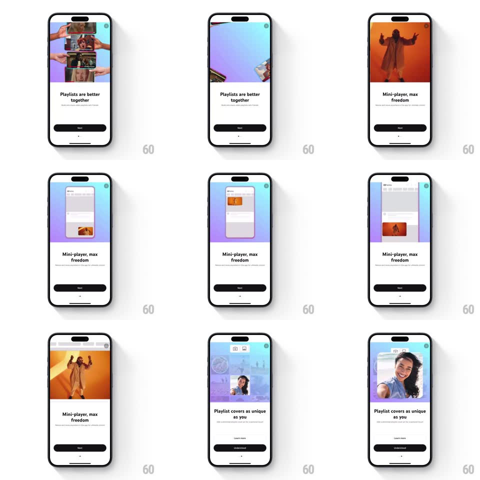

Media
Frame-by-frame

Rebuild this interaction 1:1: YouTube Premium's features story - a paged onboarding flow where each card's hero visual animates to demo the feature: a hands-with-phones collage assembles for "Playlists are better together", a video morphs into a floating mini-player for "Mini-player, max freedom", and cover art options assemble for "Playlist covers as unique as you".

Rebuild this interaction 1:1: YouTube Premium's features story - a paged onboarding flow where each card's hero visual animates to demo the feature: a hands-with-phones collage assembles for "Playlists are better together", a video morphs into a floating mini-player for "Mini-player, max freedom", and cover art options assemble for "Playlist covers as unique as you".
## Integration
Integration: stack-agnostic spec - springs given as stiffness/damping, timed motions as duration + curve; map every value to your framework and animation library of choice.
## Scene
White story pages on a pastel gradient hero area: page 1 "Playlists are better together" (hero of hands holding phones with playlist screens), page 2 "Mini-player, max freedom" (hero video of a dancer, then a phone mockup with the mini-player docked), page 3 "Playlist covers as unique as you" (a cover-art tile morphing into an options grid with camera/upload chips). Each page: headline, subline, black "Next" pill ("Understood" on the last), page dots, and a small badge dot top-right.
## Motion spec
Pattern: paged story with in-hero feature demos.
- Page advance (Next or swipe): the current hero slides/fades left while the next enters from the right (300ms, ease-out); the headline and subline crossfade with a slight rise (200ms, 60ms apart); the active page dot stretches into a pill (spring ~400/24).
- Each hero runs its own demo loop: page 1's phone-hands collage assembles piece by piece (each hand-phone slides in from a different edge, staggered 120ms, spring ~320/20); page 2's full-bleed video shrinks into the mini-player docked at the mockup's bottom (scale + corner morph, 600ms, ease-in-out) and back; page 3's cover tile flips/morphs into the options grid (rotateY 90deg swap, 350ms).
- The hero demo restarts each time its page becomes active.
- Last page: "Next" morphs its label to "Understood" (crossfade) and tapping it dismisses the flow downward (slide + fade, 300ms).
## Calibration
- The hero demo loop is tied to page visibility - paused heroes don't animate offscreen.
- Page transitions and hero demos never overlap; the demo starts 200ms after the page lands.
## Reduced motion
Pages crossfade; heroes show static composed frames.
## Don't miss
- The pastel gradient hero background shifts hue per page (mint -> peach -> lavender).
- The badge dot top-right persists across pages as the exit affordance.